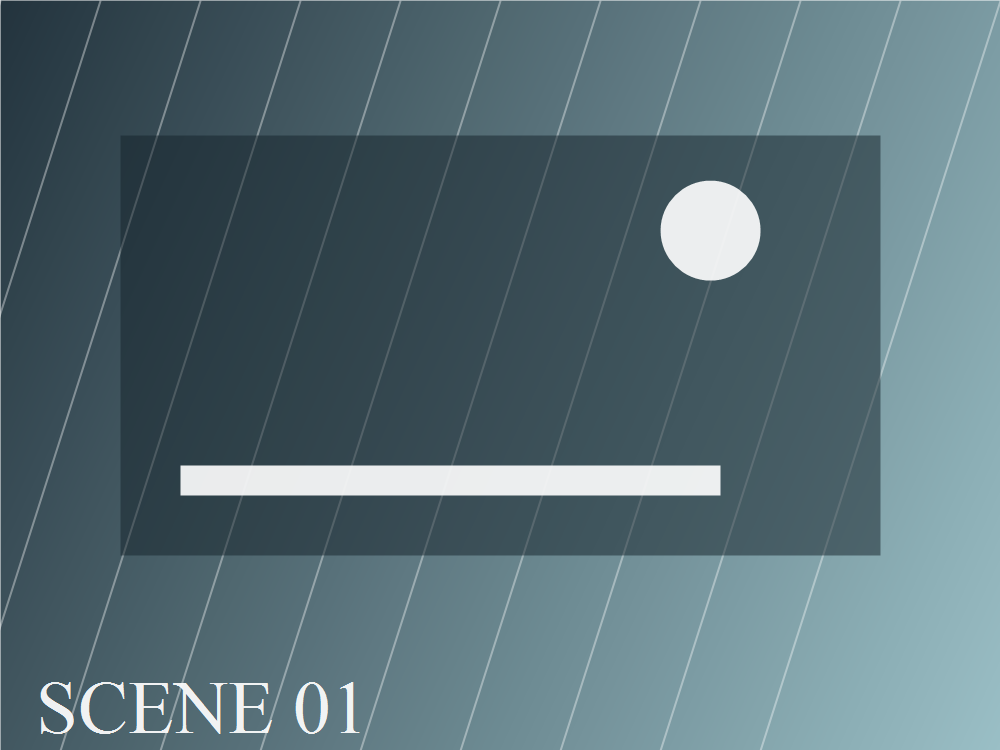
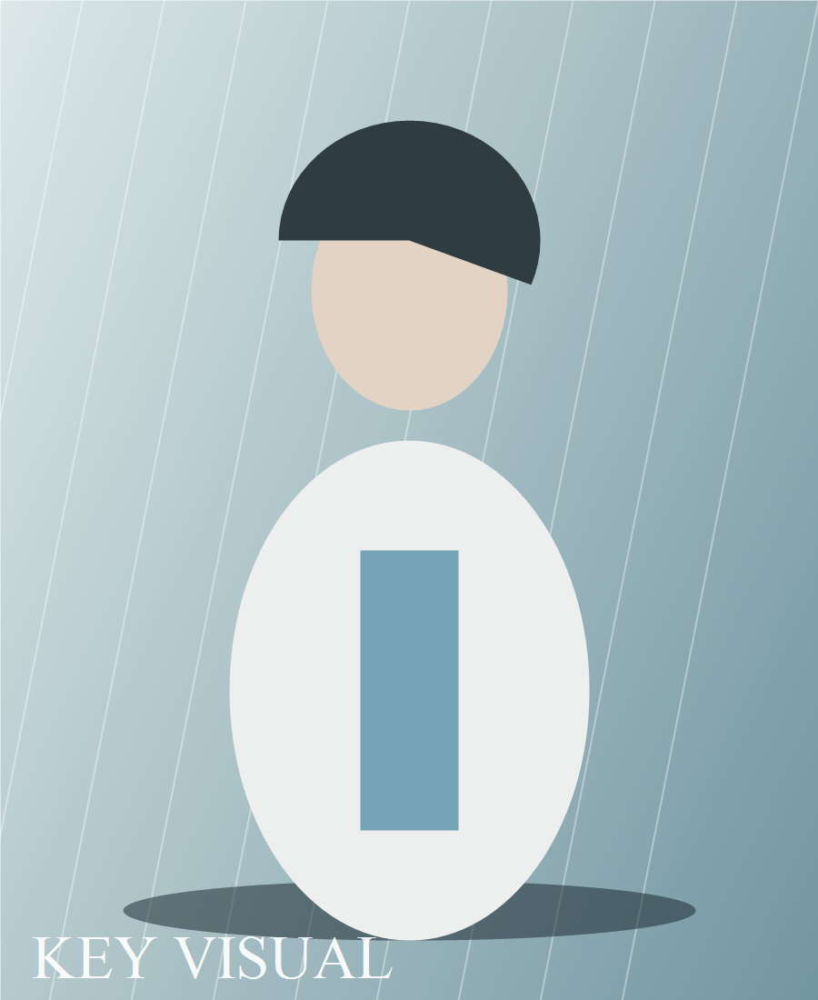
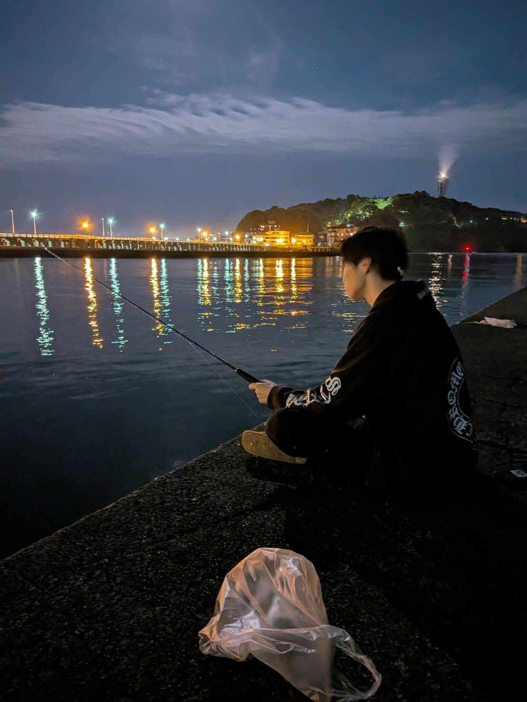
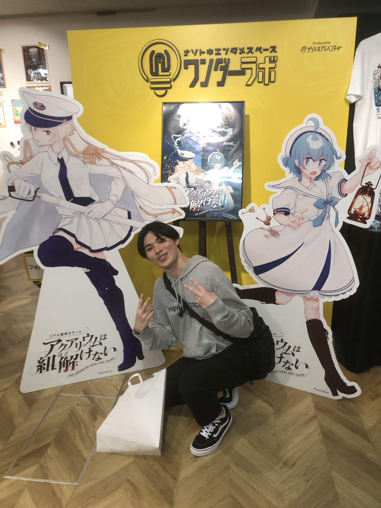
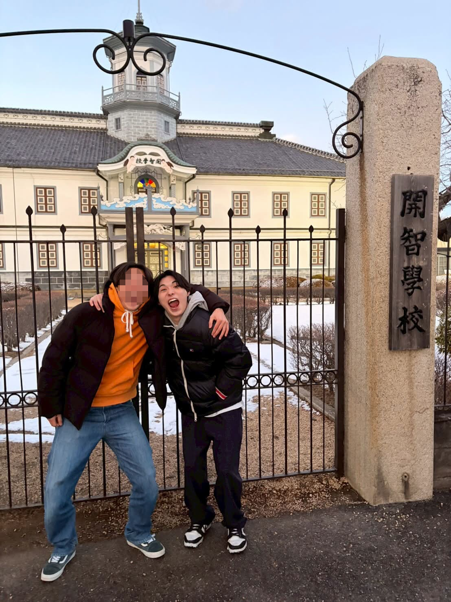
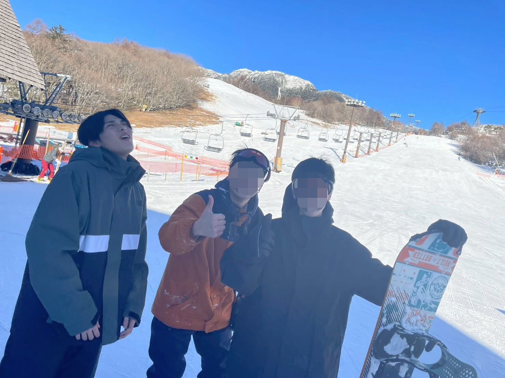
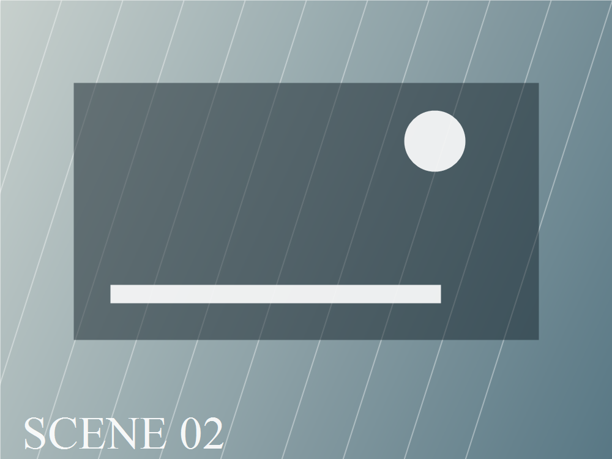

Work 02
Kinetic Portfolio Project
終わりの先へ、作品を運ぶ。
立ち絵、物語、スチル、制作作品だけを見せる仮組みLPです。 画像や動画はあとから差し替えられるよう、すべて仮素材で置いています。

Stella of Portfolio
「まだ見せていない作品があるんだ」
HAL東京 ゲーム四年制学科 ゲーム制作コース
Stella of Portfolio
古い街の光が、まだ空の底で瞬いている。
記録を運ぶ者は、壊れかけた端末と一枚の写真を抱え、 作品の断片が眠る場所へ向かう。
旅の途中で出会うのは、まだ名前のないスチル、書きかけの物語、 そして次に作るべきものの予感だった。
Stella of Portfolio




Stella of Portfolio

Work 02

Work 03